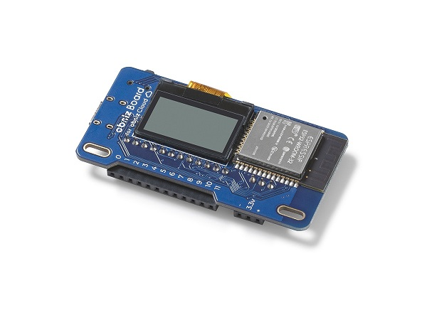
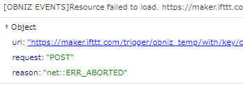

obnizのサーバレスイベントでのはまりポイント＆Tips
obnizのサーバレスイベントでのはまりポイント＆Tips
obnizを使っているとサーバレスイベントを活用するタイミングがあると思います。
特に12月発売予定のobniz board 1Yではスリープが使えるようになるのでサーバレスイベントを使うと他になにも用意せずにセンシングするようなIoTのサービスをつくれます。
https://blog.obniz.io/ja/news/obniz-board-1y-2/

今回は私がサーバレスイベントを作るにあたってはまったポイントやTipsをまとめます。
サーバレスイベントとは
公式ドキュメント：https://obniz.io/ja/doc/obniz_cloud/about_event
obnizを使うには外部にobnizを使うためのプログラムが必要ですが、obnizクラウドのイベント機能を使えばサーバーレスでプログラムを動作させられます。
obniz Eventはあらかじめ設定したトリガーが発生したときに登録しておいたプログラムを自動的にクラウド上で実行するサービスです。 これによりあなたは自分でプログラムを動かして無くてもトリガーとプログラムだけ設定しておくことで、何かが起きた時にクラウド内で自動的に処理を行えます。
上記公式から引用しましたが私なりの言葉でまとめると、サーバを用意しなくても各自で作成したプログラムを、後述するトリガーをきっかけに実行してくるツールといった感じでしょうか？
トリガー
- Webhook（APIが生成される）
- 決められたある時間(11:11など)
- 決められた時間の間隔(1時間毎など)
- obnizがオンラインになったら
- obnizのボタンが押されたら
現在5つのトリガーがあります。 指定されたobnizIDで指定されたトリガーがあったときに、各自のプログラムが実行されます。
制約事項
11/27現在
- 実行できる時間は30秒以内、それ以上は終了される
- 1日に実行可能な回数は120回
すこし制約はありますが例えばセンサーの値を取得するプログラムであれば12分に1回はデータを貯められます。
はまりポイント
APIを使用したとき
次のようにAPIを使用するときエラーが発生することがあります。
await fetch('https://maker.ifttt.com/trigger/obniz_temp/with/key/', {
method: 'POST',
mode: "no-cors",
body: formData
}).then(()=>console.log("success")).catch((error) => console.log(error));

このときにAPIの呼出し後にawait obniz.wait(1000)をいれるとエラーが発生しなくなります。
Tips
絶対にスリープさせる
センサーの値読み取りなど予期しないところでプログラムが停止してしまうなど可能性があります。
電池稼働しているデバイスではこの問題はクリティカルなので、サーバレスイベントが終了する前にスリープをするようにします。
（obniz board 1Yでのみ使用可能です。）
//Timeout 25s
let tid = setTimeout(()=>{
let dt = new Date();
dt.setMinutes(Math.floor(dt.getMinutes()/10)*10+10,0,0);
obniz.sleep(dt);
obniz.close();
},25000);
こんな感じでスリープするプログラムをobniz.onconnectの外でも呼び出せば問題ないかと思います。
他にTipsがあれば追記していこうと思います。
まとめ
obnizの便利機能であるサーバレスイベント、そのはまりポイントとTipsを簡単にまとめました。
定期的にセンシングしてみたいなと思ったら、ぜひ一度さわってみるとよいでしょう！